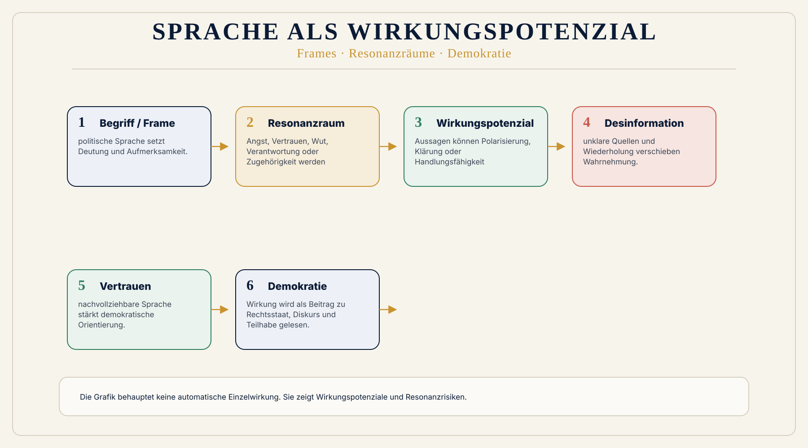
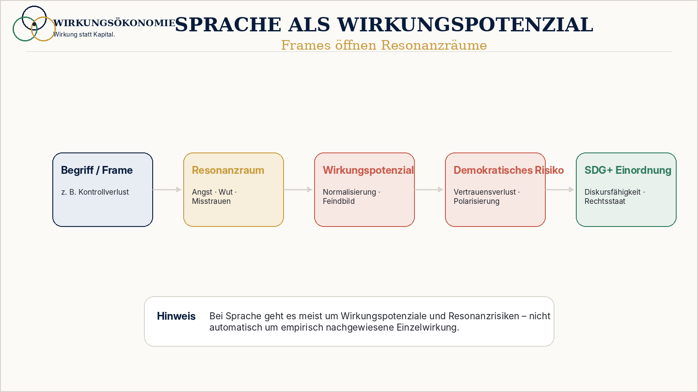

Faktencheck
Stimmt das?
- prüft Tatsachenbehauptungen
- arbeitet mit Belegen, Zahlen und Quellen
- ordnet ein, ob Aussagen korrekt, verkürzt oder falsch sind
 Wirkungsökonomie
Wirkungsökonomie
SDG+ · Medien · Demokratie
Warum Frames, Narrative und Begriffe Demokratie verändern können.
Diese Seite ist kein Faktencheck und keine Wahlempfehlung. Sie analysiert, welche Wirkungspotenziale politische Sprache erzeugt: Welche Frames werden geöffnet? Welche Resonanzräume entstehen? Welche Wahrnehmungsverschiebungen werden wahrscheinlicher? Welche Wirkung kann das auf Vertrauen, Diskursfähigkeit, Rechtsstaatlichkeit, gesellschaftlichen Zusammenhalt und Demokratie haben?
Faktencheck prüft Inhalt. Wirkungsanalyse prüft Folgen.
Politische Aussagen wirken häufig lange bevor sie als wahr oder falsch geprüft werden. Sie können Vertrauen stärken, Komplexität erklären und Verantwortung sichtbar machen. Sie können aber auch Angst verstärken, Feindbilder erzeugen, Verantwortung verschieben und Demokratie beschädigen.
Die Wirkungsökonomie fragt deshalb: Welche Wirkung hat politische Sprache auf Mensch, Planet und Demokratie?

Audio-Einführung
Diese Audio-Einführung erklärt, warum politische Sprache in der Wirkungsökonomie als Wirkungsraum betrachtet wird.
Sprache beschreibt nicht nur Wirklichkeit. Sprache verändert Wirklichkeit.
Sie entscheidet mit darüber, was Menschen für bedrohlich halten. Wem sie vertrauen. Wen sie verantwortlich machen. Welche Lösungen ihnen plausibel erscheinen. Und wo sie anfangen, Demokratie nicht mehr als gemeinsamen Raum zu sehen, sondern als Kampfzone.
Genau deshalb betrachtet die Wirkungsökonomie politische Sprache als Wirkungsfeld.
Diese Seite ist kein klassischer Faktencheck. Ein Faktencheck fragt: Stimmt eine Aussage? Gibt es Belege? Sind Zahlen korrekt? Ist eine Behauptung nachweisbar?
Das ist wichtig. Aber es reicht nicht.
Denn Sprache wirkt häufig schon, bevor sie geprüft wird.
Ein Begriff kann Angst aktivieren. Ein Frame kann Misstrauen verstärken. Ein Narrativ kann Menschen in Gruppen teilen: wir hier, die dort. Ein Satz kann Verantwortung verschieben - weg von komplexen Ursachen, hin zu einfachen Schuldigen.
Eine Aussage kann formal erlaubt sein. Sie kann sogar einzelne richtige Elemente enthalten. Und trotzdem Resonanzräume öffnen, die demokratisch schädlich wirken.
Darum fragt die Wirkungsanalyse anders.
Sie fragt nicht nur: Ist das wahr? Sie fragt: Was bewirkt diese Sprache?
Welche Gefühle aktiviert sie? Welche Bilder entstehen im Kopf? Welche Gruppen werden markiert? Welche Institutionen verlieren Vertrauen? Welche Systemursachen verschwinden aus dem Blick? Und welche Art von Politik wird dadurch wahrscheinlicher?
Politische Sprache ist nie nur Information. Sie ist Orientierung. Sie ist Deutung. Sie ist Macht über Aufmerksamkeit.
Wenn ein komplexes Problem auf einen einzigen Gegner reduziert wird, entsteht keine Klarheit. Es entsteht ein Feindbild.
Wenn demokratische Parteien pauschal als geschlossener Machtblock beschrieben werden, entsteht keine bessere Kontrolle. Es entsteht Misstrauen gegen demokratische Konkurrenz.
Wenn Migration als Masse erzählt wird, verschwinden Menschen, Biografien, Verfahren, Ursachen und Integrationsfragen hinter einem Bedrohungsbild.
Wenn Klimapolitik als Diktatur gerahmt wird, verschwinden fossile Abhängigkeit, Gesundheitskosten, Klimarisiken und langfristige Versorgungssicherheit aus der Debatte.
Und wenn Medien pauschal als gesteuerte Meinung erscheinen, wird nicht nur ein Sender kritisiert. Dann wird die öffentliche Wahrheitsinfrastruktur selbst geschwächt.
Das bedeutet nicht, dass Kritik verboten ist. Im Gegenteil.
Demokratie braucht harte Kritik. Sie braucht Widerspruch. Sie braucht Streit. Sie braucht Kontrolle von Macht.
Aber demokratischer Streit braucht einen Unterschied zwischen Kritik und Delegitimierung.
Kritik fragt: Was läuft falsch? Was muss besser werden? Wer trägt Verantwortung?
Delegitimierung sagt: Das ganze System ist verrottet. Alle anderen sind Teil eines Blocks. Institutionen sind nur Fassade. Medien lügen. Wissenschaft ist Ideologie. Rechtsstaat ist Schwäche.
An dieser Stelle wird Sprache selbst zur politischen Wirkung.
Sie verändert nicht nur Meinungen. Sie verändert Vertrauen. Sie verändert Zugehörigkeit. Sie verändert Handlungsschwellen. Sie verändert das, was Menschen für normal halten.
Die Wirkungsökonomie macht genau diese Zusammenhänge sichtbar.
Nicht aus moralischer Empörung. Nicht als Parteipropaganda. Sondern als Analyse von Wirkung auf Mensch, Planet und Demokratie.
Denn Demokratie besteht nicht nur aus Wahlen, Parlamenten und Gesetzen. Demokratie lebt auch von Vertrauen, Wahrheit, Diskursfähigkeit, Minderheitenschutz und der Fähigkeit, gemeinsame Probleme gemeinsam zu lösen.
Wenn Sprache diese Grundlagen stärkt, kann sie positive Wirkungspotenziale öffnen und demokratisch stärkende Zustandsveränderungen wahrscheinlicher machen. Wenn Sprache Angst, Feindbilder, Misstrauen und Entsolidarisierung verstärkt, entsteht ein Resonanzrisiko für negative demokratische Wirkung. Ob Wirkung tatsächlich eingetreten ist, braucht Kontext, Daten und Wirkungsnachweis.
Auch politische Sprache wirkt relational. Ein Begriff kann einer Gruppe Orientierung, Zugehörigkeit oder emotionale Entlastung geben und gleichzeitig andere Gruppen abwerten, Angst verstärken oder Vertrauen in demokratische Institutionen beschädigen. Die Wirkungsanalyse fragt deshalb nicht nur, wer sich bestätigt fühlt, sondern welche Wirkung im demokratischen Resonanzraum entsteht.
Die Beispiele auf dieser Seite zeigen deshalb keine bloßen Begriffe. Sie zeigen Wirkungspotenziale und plausible Rückkopplungspfade.
Diese Analyse ersetzt keinen Wirkungsnachweis. Sie zeigt, welche Resonanzräume, Wirkmechanismen und Risiken politische Sprache öffnet.
Ein Begriff öffnet einen Frame. Der Frame aktiviert einen Resonanzraum. Der Resonanzraum verschiebt Wahrnehmung. Die verschobene Wahrnehmung kann Debatten, Entscheidungen und demokratische Stabilität verändern.
Die entscheidende Frage lautet also nicht nur: Was wurde gesagt?
Sondern: Was verändert sich dadurch?
Genau hier beginnt die Wirkungsökonomie der politischen Sprache.
Methode
Ein Faktencheck prüft, ob eine Aussage richtig oder falsch ist. Eine Wirkungsanalyse fragt zusätzlich, was eine Aussage mit Wahrnehmung, Vertrauen, Angst, Zugehörigkeit, Polarisierung und demokratischer Handlungsfähigkeit macht.
Eine Aussage kann einzelne richtige Elemente enthalten und trotzdem einen Resonanzraum öffnen, der Misstrauen, Feindbilder oder demokratische Erschöpfung verstärkt. Umgekehrt kann Sprache Orientierung geben, Komplexität erklären und Vertrauen stärken.
Eine Wirkungsanalyse bewertet nicht, ob eine Meinung erlaubt ist. Sie bewertet auch nicht Personen. Sie untersucht, welche Wirkungspotenziale durch Begriffe, Frames, Wiederholungen, Schuldzuweisungen, Bedrohungsbilder und Vereinfachungen entstehen.
Sprache wirkt nicht automatisch linear. Aber Frames verschieben Wahrnehmung. Narrative öffnen Resonanzräume. Resonanzräume verändern Vertrauen, Angst, Zugehörigkeit, Kontrollsehnsucht und Feindbilder. Diese Veränderungen wirken auf Diskurs, Rechtsstaat, Medienvertrauen, Institutionen und Demokratie.
Die Wirkungsanalyse politischer Sprache bewertet nicht nach persönlicher Meinung. Sie fragt, ob Begriffe, Frames und Narrative auf die SDGs und SDG+-Dimensionen einzahlen oder sie schwächen. Sprache kann positive Wirkungspotenziale öffnen, wenn sie Vertrauen, Wahrheitsfähigkeit, demokratische Teilhabe, Rechtsstaatlichkeit und Zusammenhalt stärkt. Sie kann Resonanzrisiken für negative Wirkung öffnen, wenn sie Misstrauen, Feindbilder, Entsolidarisierung, Desinformation oder demokratische Destabilisierung verstärkt. Eingetretene Wirkung wird erst mit Daten, Kontext und Nachweis behauptet.

Faktencheck
Wirkungsanalyse
Beide Formen können sich ergänzen. Ein Faktencheck schützt die gemeinsame Wirklichkeit. Eine Wirkungsanalyse zeigt, welche Resonanzräume eine Aussage öffnet.
Sprache als Wirkungspotenzial
Die WÖk behauptet nicht, dass ein einzelnes Wort allein Demokratie zerstört. Sie zeigt, welche Resonanzräume Sprache öffnet und welche Wirkungspotenziale daraus entstehen.
Begriffe aktivieren Frames. Frames verändern, welche Ursachen, Schuldigen und Lösungen plausibel erscheinen. Narrative schaffen Wiederholung, Zugehörigkeit und Feindbilder. Wirkung entsteht über Anschlussfähigkeit, Wiederholung, Emotion und Kontext.
Wichtig
Wirkungspotenzial beschreibt die Möglichkeit, dass Wirkung entsteht. Eingetretene Wirkung braucht Daten, Kontext und Nachweis. Diese Seite arbeitet deshalb mit Resonanzrisiken und plausiblen Wirkpfaden.
Bewertungsräume
Politische Sprache wird nicht als private Moral bewertet, sondern nach ihrer möglichen Zustandsveränderung in demokratischen Wirkungsräumen: Vertrauen, Rechtsstaatlichkeit, Diskursfähigkeit, Medienqualität und gesellschaftlicher Zusammenhalt.
Analysemodell
Jedes Beispiel folgt derselben Struktur. So bleibt die Analyse vergleichbar, überprüfbar und nicht abhängig von persönlicher Zustimmung oder Ablehnung.
Begriff / Aussage → Frame → Narrativ → Resonanzraum → Wirkungspotenzial → mögliche Wahrnehmungsverschiebung → SDG+/Demokratiebezug → WÖk-Gegenfrage.
Kurzer Auszug, Quelle, Kontext, Abrufdatum und Link. Keine langen Programmabschnitte.
Bedrohungsframe, Schuldverschiebung, Freund-Feind-Logik, Kontrollversprechen oder Vereinfachung.
Angst, Wut, Kränkung, Misstrauen, Kontrollsehnsucht, Zugehörigkeit oder Schuldabwehr.
Welche Wahrnehmungsverschiebung wird wahrscheinlicher? Welche Handlungsschwellen, Feindbilder oder Vertrauenserosion können entstehen?
Wirkung auf Mensch, Demokratie, gesellschaftliche Stabilität und - falls relevant - Planet, Ressourcen und Umsetzung der SDGs.
Nicht moralisch reagieren, sondern den Frame entwirren: Was blendet er aus? Welche Systemfrage müsste gestellt werden?
Interaktive Pilotanalyse
Als erstes Fallbeispiel wird das AfD-Regierungsprogramm unter afd-regierungsprogramm.de methodisch vorbereitet. Die Analyse bewertet Wirkungspotenziale, keine Personen, keine Wähler:innen und keine rechtliche Zulässigkeit.
Das Beispiel bleibt bewusst methodisch: Es zeigt, wie politische Begriffe Resonanzräume öffnen können. Die Methode ist auf andere Programme, Medienartikel, Social-Media-Beiträge und Wahlkommunikation übertragbar.
Interaktive Detailanalysen
Die folgenden Module werden aus einer zentralen Datenstruktur erzeugt. Die Übersicht ist filterbar; die Detailanalyse zeigt Quelle, Mechanik, Resonanzräume, Wahrnehmungsverschiebung, Radar, Wirkungspfad, Wirkungsnetz und Gegenframe.
Begriffe wie Wirkungspotenzial, Wirkungsraum, Narrativ, Frame, Demokratie und SDG+ führen direkt ins Glossar.
Statische Übersicht
Die interaktive Analyse ergänzt diese Seite, ist aber nicht die einzige Leseschicht. Die statischen Kurzanalysen darunter bleiben ohne JavaScript sichtbar und nennen Materialstand, Frame, Resonanzrisiko und WÖk-Gegenfrage.
Materialstand: Pilotanalyse auf Basis des öffentlich verlinkten AfD-Regierungsprogramm-Materials und verbreiteter politischer Frames; kurze Begriffe werden analysiert, keine langen Programmpassagen reproduziert.
Pilotanalyse · Demokratie / Institutionen
Materialstand: Pilotanalyse / Programmmaterial und öffentliche Frame-Verwendung. Wirkungsstatus: Wirkungspotenzial, kein empirischer Einzelnachweis.
Der Begriff reduziert demokratische Parteienvielfalt auf einen geschlossenen Machtblock. Er aktiviert Misstrauen, verengt Kompromissfähigkeit und verdeckt konkrete Verantwortungs- und Reformfragen.
Pilotanalyse · Kontrolle / Freiheit
Materialstand: Pilotanalyse / Programmmaterial und öffentliche Frame-Verwendung. Wirkungsstatus: Wirkungspotenzial, kein empirischer Einzelnachweis.
Der Frame dreht demokratische Kritik in eine Opfer- und Unterdrückungserzählung. Er verschiebt die Debatte von Prüfung zu Abwehr und Mobilisierung.
Pilotanalyse · Demokratie / Institutionen
Materialstand: Pilotanalyse / Programmmaterial und öffentliche Frame-Verwendung. Wirkungsstatus: Wirkungspotenzial, kein empirischer Einzelnachweis.
Der Begriff verschiebt demokratische Konflikte in einen Ausnahmezustand und delegitimiert Institutionen als Herrschaftsapparat.
Pilotanalyse · Migration / Identität
Materialstand: Pilotanalyse / Programmmaterial und öffentliche Frame-Verwendung. Wirkungsstatus: Wirkungspotenzial, kein empirischer Einzelnachweis.
Die Formulierung macht aus Menschen eine bedrohliche Masse und verschiebt Wohnungs-, Arbeitsmarkt-, Verwaltungs- und Sicherheitsfragen auf eine Gruppe.
Pilotanalyse · Migration / Identität
Materialstand: Pilotanalyse / Programmmaterial und öffentliche Frame-Verwendung. Wirkungsstatus: Wirkungspotenzial, kein empirischer Einzelnachweis.
Der Begriff normalisiert Rückführung und Ausschluss als verwaltbare Ordnungstechnik und belastet Rechtsstaat, Menschenwürde und Zusammenhalt.
Pilotanalyse · Kontrolle / Freiheit
Materialstand: Pilotanalyse / Programmmaterial und öffentliche Frame-Verwendung. Wirkungsstatus: Wirkungspotenzial, kein empirischer Einzelnachweis.
Der Begriff verspricht Kontrolle durch radikalen Richtungswechsel und entwertet Lernen, Übergänge und differenzierte Lösungen.
Pilotanalyse · Klima / Energie
Materialstand: Pilotanalyse / Programmmaterial und öffentliche Frame-Verwendung. Wirkungsstatus: Wirkungspotenzial, kein empirischer Einzelnachweis.
Der Frame rahmt Klimapolitik als sozialistische Kontrolle und verdeckt fossile Abhängigkeiten, Preisvolatilität und Klimafolgekosten.
Pilotanalyse · Klima / Energie
Materialstand: Pilotanalyse / Programmmaterial und öffentliche Frame-Verwendung. Wirkungsstatus: Wirkungspotenzial, kein empirischer Einzelnachweis.
Der Frame macht Klimaschutz zur Freiheitsbedrohung und verschiebt wissenschaftliche Risikosteuerung in einen Kulturkampf.
Pilotanalyse · Kulturkampf / Gesellschaft
Materialstand: Pilotanalyse / Programmmaterial und öffentliche Frame-Verwendung. Wirkungsstatus: Wirkungspotenzial, kein empirischer Einzelnachweis.
Der Frame macht Vielfalt und Gleichberechtigung zur Bedrohung von Familie, Kindern und Normalität.
Pilotanalyse · Medien / Wahrheit
Materialstand: Pilotanalyse / Programmmaterial und öffentliche Frame-Verwendung. Wirkungsstatus: Wirkungspotenzial, kein empirischer Einzelnachweis.
Der Frame schwächt Vertrauen in Medien und journalistische Kontrolle, indem öffentliche Wahrheitsinfrastruktur als Manipulation gerahmt wird.
Anwendung
Der WÖk-Scanner kann später Texte, Artikel, Websites, Wahlprogramme und politische Aussagen nach dieser Logik einordnen: Frame, Narrativ, Resonanzraum, Wirkungspotenzial, SDG+/Demokratiebezug und WÖk-Gegenfrage.
Scanner-Modus
Die Analyse fragt nicht zuerst nach Zustimmung oder Ablehnung, sondern nach Wirkpfad, Datenlage, Resonanzrisiko, SDG+-Bezug und Grenzen der Einordnung.
WÖk-Scanner öffnenFür Journalismus
Journalismus braucht neben Faktenprüfung auch Wirkungsanalyse: Welche Frames werden verstärkt? Welche Resonanzräume öffnen sich? Welche Wirkung entsteht auf Vertrauen, Diskursfähigkeit und demokratische Korrektur?
Wirkungsanalyse für JournalismusDer Scanner liefert eine wirkungsökonomische Ersteinschätzung, keine Wahlempfehlung und keinen vollständigen Faktencheck.
Anwendung
Die Methode lässt sich auf politische Programme, Social-Media-Clips, Wahlplakate, Talkshow-Aussagen, Medienüberschriften, Influencer-Narrative und Plattformlogiken anwenden.
WÖk-Scanner
Der Scanner nutzt diese Logik als Ersteinschätzung: Frame, Narrativ, Resonanzraum, Wirkungspotenzial, SDG+/Demokratiebezug und WÖk-Gegenfrage.
Für Journalismus
Journalismus braucht neben Faktenprüfung auch Wirkungsanalyse: Welche Frames werden verstärkt, welche Resonanzräume öffnen sich?
Demo
Aus einem Beispieltext wird eine Medien-Wirkungspotenzial-Scorecard.
Dossier
Lesepfad zu Sprache, Öffentlichkeit, Plattformlogik und demokratischer Stabilität.
Glossar
Der zentrale Begriff für mögliche Wirkung vor eingetretenem Schaden.
Der WÖk-Scanner liefert eine wirkungsökonomische Ersteinschätzung, keine Wahlempfehlung und keinen vollständigen Faktencheck.
SDG+ und Demokratie
Politische Sprache ist kein Nebenthema. Sie verändert Resonanzräume, Vertrauen, Feindbilder, Zugehörigkeit und demokratische Stabilität. Die Wirkungsökonomie betrachtet deshalb nicht nur Produkte, Preise und Steuern, sondern auch Öffentlichkeit, Medien und politische Narrative als Wirkungsräume.
SDG+ ist keine offizielle UN-Kategorie, sondern die WÖk-Erweiterung für demokratische Voraussetzungen der SDGs. Ohne Vertrauen, Rechtsstaatlichkeit, Diskursfähigkeit und Medienqualität können die SDGs nicht wirksam umgesetzt werden.
SDG+
Demokratische Stabilität braucht Grundrechte, Verfahren, Minderheitenschutz, Gewaltenteilung und friedliche Korrekturfähigkeit.
SDG+
Öffentliche Wahrheit braucht Quellenklarheit, Kontext, Kritikfähigkeit und Verantwortung für Resonanzräume.
SDG+
Vertrauen entsteht nicht durch Beschwichtigung, sondern durch nachvollziehbare Regeln, Rechenschaft, Korrektur und faire Teilhabe.
Methodische Grenze
Diese Seite trifft klare wirkungsanalytische Aussagen, aber sie behauptet keine empirische Einzelwirkung ohne Nachweis. Sie trennt deshalb sorgfältig zwischen Faktenprüfung, Framinganalyse, Wirkungsanalyse, empirisch nachgewiesener Wirkung, Wirkungspotenzial, Resonanzrisiko und demokratischer Systemwirkung.
Nicht behauptet
Ein Begriff erzeugt nicht mechanisch denselben Schaden bei allen Menschen. Entscheidend sind Kontext, Wiederholung, Anschlussfähigkeit, Plattformlogik, Zielgruppen und öffentliche Resonanz.
Behauptet
Diese Analyse zeigt, welche Frames, Emotionen, Schuldzuweisungen und ausgeblendeten Systemfragen durch politische Sprache wahrscheinlicher werden.
Quellen und Stand
Die Pilotanalyse nutzt kurze Begriffsauszüge und eigene wirkungsanalytische Einordnung. Lange Programmpassagen werden nicht reproduziert.
Materialbasis
AfD-Regierungsprogramm Sachsen-Anhalt, Quelle: afd-regierungsprogramm.de, Abruf der Pilotdaten: 2026-05-21.
Die Seite dokumentiert Wirkungspotenziale und Resonanzrisiken, keine vollständige Programmanalyse und keine Wahlempfehlung.
WÖk-Basis